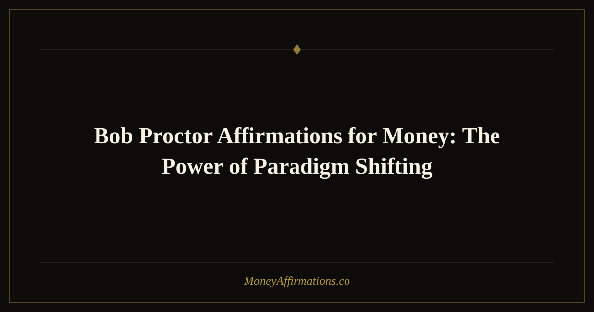

Bob Proctor Affirmations for Money: The Power of Paradigm Shifting

Note: The affirmations below are original statements inspired by Bob Proctor's concepts of paradigms, vibration, and wealth consciousness — they are not direct quotes from his seminars or books. We encourage you to explore his work, including You Were Born Rich, for his exact teachings.
Bob Proctor spent more than five decades teaching a single core insight: the reason most people stay stuck financially is not lack of talent, effort, or opportunity — it is their paradigm. A paradigm is the invisible mental program installed in childhood that controls your habitual behavior, and it runs on a frequency. If that frequency is set to "scarcity," no amount of hard work will push you into lasting wealth — because you keep unconsciously pulling back to the familiar. The only solution is a paradigm shift: repetition, emotional intensity, and new self-concept statements spoken until the subconscious accepts them as truth. These 20 affirmations are built on that principle.
What Are Paradigm-Shifting Money Affirmations?
Proctor drew heavily from the work of Thomas Troward, Napoleon Hill, and Wallace Wattles, all of whom understood that the mind operates on two levels — conscious and subconscious — and that the subconscious accepts whatever the conscious mind dwells on with feeling and repetition. A paradigm-shifting affirmation is one designed to interrupt the old mental program and replace it with a new, higher-frequency belief about money and identity. These statements deliberately use Proctor's language around vibration, frequency, consciousness, and paradigm — because that framing is what makes them internally consistent and mutually reinforcing when practiced as a set.
20 Bob Proctor-Inspired Money Affirmations
- I am shifting my paradigm right now, releasing old programs about money and stepping into a new wealth consciousness.
- I am in perfect vibrational harmony with financial abundance, and the universe responds to my frequency.
- My subconscious mind now accepts and acts upon the truth that I am meant to be wealthy.
- I think in terms of abundance, act from abundance, and receive abundance — this is my new paradigm.
- I understand that money is spiritual substance, and I receive it freely by being of genuine service to others.
- I am not a product of my past financial results — I am the creator of my future financial reality.
- My awareness of wealth is expanding daily, and what I am aware of, I attract into my life.
- I raise my vibration every time I think about money with gratitude, love, and confident expectation.
- I am the image of wealth I hold in my mind, and I hold that image clearly and joyfully.
- Wealth is my birthright and I claim it fully — my old paradigm of lack is dissolving now.
- I act boldly from my goals, not from my current conditions, because my thoughts create my circumstances — not the other way around.
- I am in the business of creating value, and the money I earn is simply the measure of the value I provide.
- I now operate on the frequency of abundance, and everything in my environment rearranges to confirm this truth.
- I have the intellectual capacity, the creative power, and the unstoppable will to build extraordinary wealth.
- My paradigm around money is shifting every single day — old limitations are falling away and new possibilities are flooding in.
- I feel rich now, think rich now, and act rich now — because inner wealth always precedes outer wealth.
- I am conscious of the infinite supply that surrounds me, and I draw from it freely, confidently, and gratefully.
- Money is a reward for service rendered, and I render exceptional service — therefore, I receive exceptional rewards.
- I am a person who thinks big, plays big, and receives in proportion to the bigness of my thinking.
- My financial life is a perfect reflection of my consciousness, and I am consciously expanding both every day.
How to Use These Affirmations Daily
Proctor was emphatic that repetition is the mechanism of paradigm change — not occasional contemplation but relentless, emotionally charged repetition until the new idea is accepted by the subconscious as a fact of life. He recommended reading or speaking your chosen affirmations at minimum twice daily: immediately upon waking (before your habitual thinking re-establishes its dominance) and last thing at night (when the critical faculty relaxes and the subconscious is most receptive). Crucially, feel the affirmation as you say it. Emotion is the accelerant. A statement spoken with genuine excitement, expectation, or gratitude reprograms faster than one recited with detachment. Choose three to five of these affirmations and stay with them for 30 consecutive days before rotating. Consistency over this time window is what Proctor identified as necessary for a measurable paradigm shift.
Tips to Make Them Work Faster
- Use spaced repetition throughout the day. Set phone reminders at three or four points in the day to read one affirmation with full emotional attention — this keeps the new belief active in consciousness and accelerates subconscious acceptance.
- Visualize while you affirm. Hold a specific mental image of your abundant life as you speak each statement. Thought plus image plus feeling is the Proctor trifecta.
- Speak them aloud, not silently. The auditory loop of hearing your own voice say the words creates an additional sensory anchor that silent reading cannot.
- Act as if the paradigm has already shifted. Make one bold financial decision each week that your old paradigm would have refused — pitch the higher-rate client, make the investment, ask for the raise.
- Track the discomfort. When an affirmation makes you uncomfortable, that's friction between the new and old paradigms — a sign you've chosen the right one.
Frequently Asked Questions
What exactly is a paradigm in Bob Proctor's framework?
A paradigm, in Proctor's teaching, is a multitude of habits — mostly installed before the age of seven — that control virtually all habitual behavior. It includes your beliefs about what's possible for you financially, your emotional response to money, your automatic behaviors around spending and saving, and your identity as either a wealthy or non-wealthy person. Because paradigms operate at the subconscious level, you can consciously want wealth while your paradigm systematically undermines every attempt to achieve it. Affirmations, repeated with emotion over time, are one of the primary tools for rewriting that programming.
How long does it take to shift a financial paradigm?
Proctor often cited 30 consecutive days of dedicated repetition as a minimum for beginning to feel a shift, though he was clear that deeply rooted programs installed over decades may require months of consistent practice. The key metric is not time but intensity: brief, emotionally charged daily practice consistently outperforms long sessions done without feeling. The first noticeable sign of a shift is usually behavioral — you find yourself making different financial choices without consciously deciding to.
Is there a specific affirmation Bob Proctor used himself?
Proctor famously used a specific goal card practice — a written statement of a financial goal in present tense, kept on a card and read multiple times daily with full emotional investment. Rather than a single affirmation, his personal practice involved a goal statement paired with the question "how?" — keeping the creative subconscious perpetually engaged in problem-solving toward the stated outcome. The affirmations above are designed in that spirit: specific, present-tense, and emotionally vivid enough to keep the mind productively engaged.
Paradigm shifting takes consistency, but you don't have to do it alone. For a broader toolkit of statements that reinforce the wealth consciousness Bob Proctor championed, explore our complete abundance affirmations collection — organized by mindset theme to support every stage of your financial transformation.